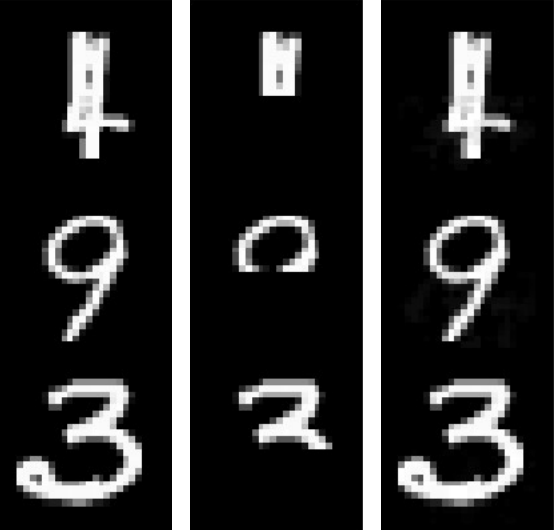
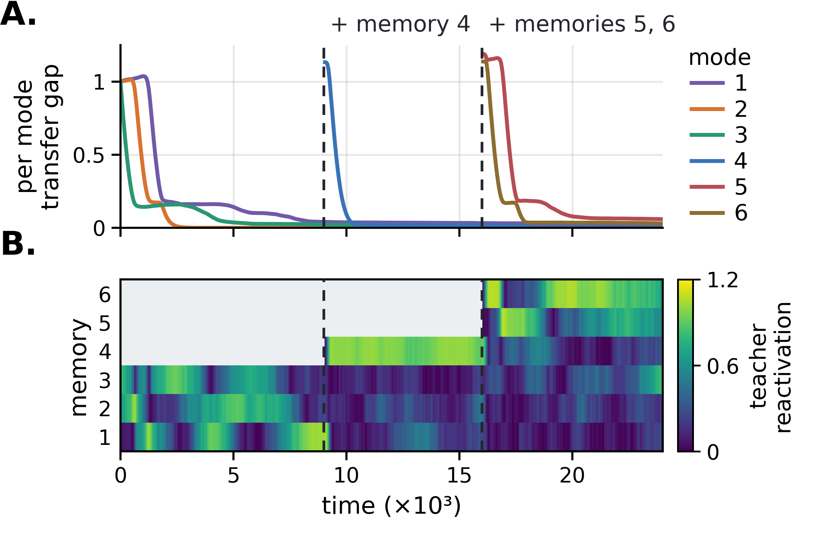
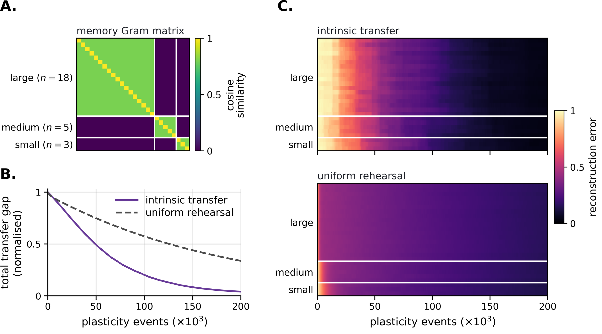
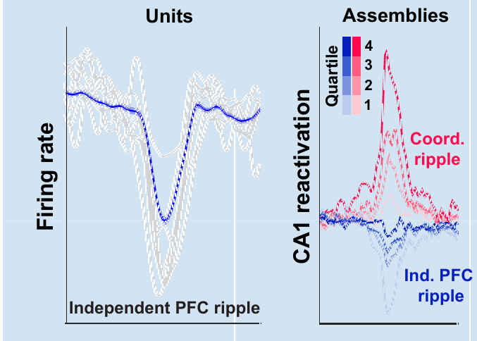
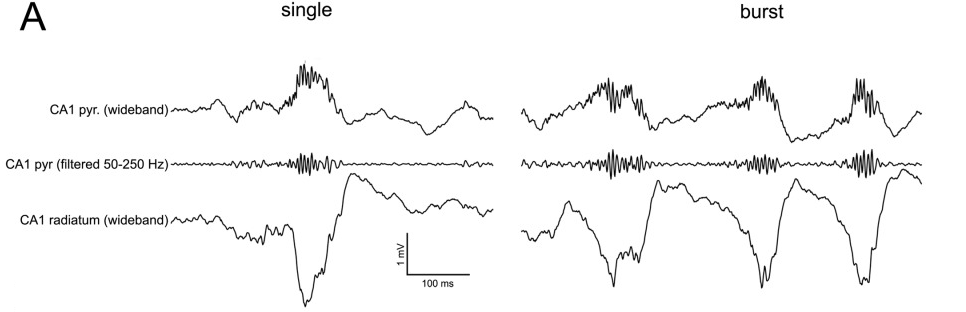
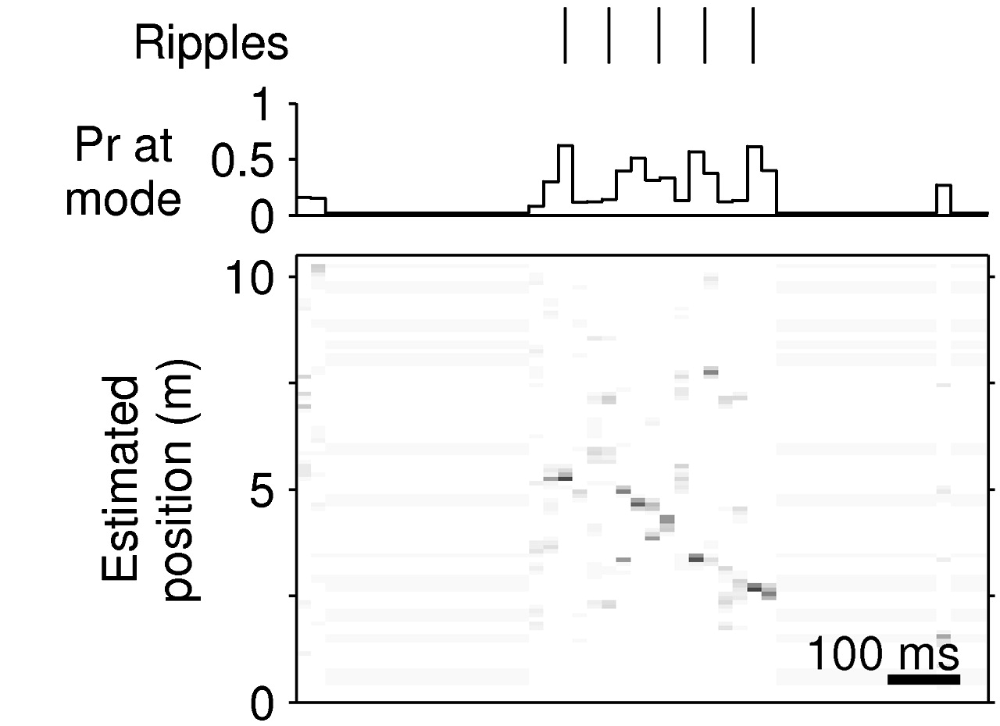
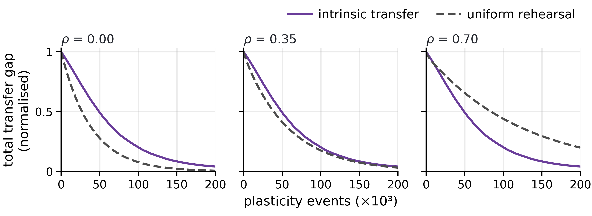
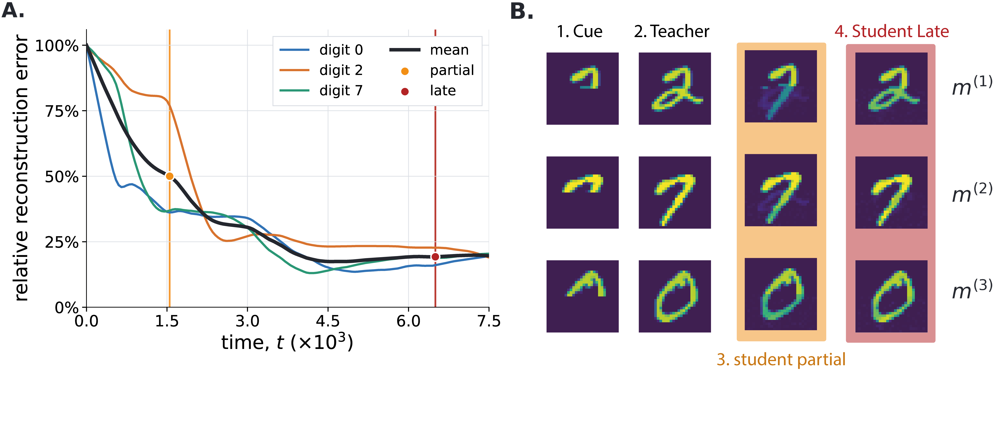
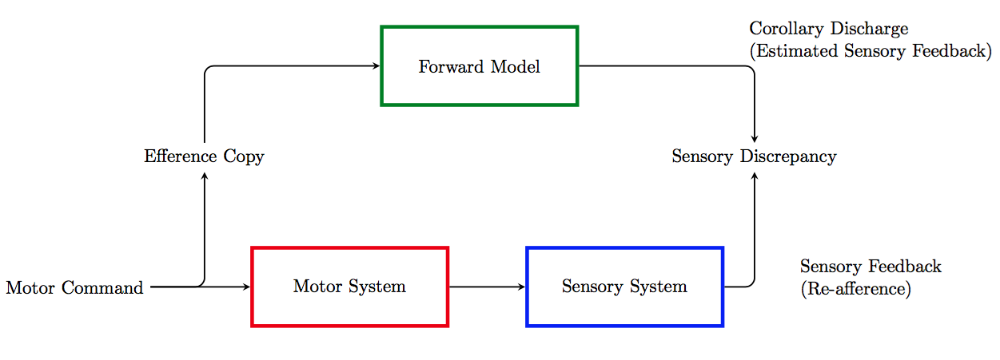
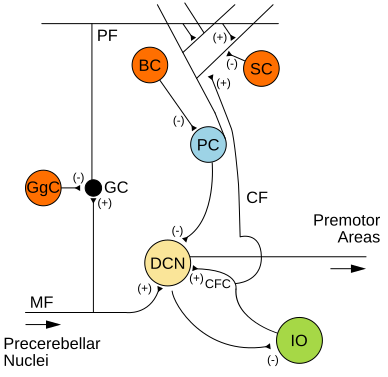

Show how neural networks can couple through prediction errors to bring their predictive models into agreement
Their predictive models agree when both hold the same attractor manifold
Goal: structure spontaneous activity so that the redistribution of the teacher's memory subspace is fast and exhaustive
Teacher and student: each a covPCN, a predictive-coding network that stores memories


The student learns from spontaneous hippocampal activity without access to the original training patterns. For highly correlated patterns, it reduces the transfer gap in fewer plasticity events than uniform rehearsal.

Replay tracks the states of the teacher memory subspace that the student explains worst
These states do not have to be the stored memory patterns



Learning a new trace degrades the cortex's prediction of older ones. They pass the veto again, and the hippocampus replays them with the new trace until the cortex predicts both
In the previous model, the same mechanism makes the teacher drift toward what the student reconstructs poorly
| Cortical vetoreplays what the cortex predicts poorly | Tagging at encodingreplays what novelty or reward marked at storage, with a mark that fades | |
|---|---|---|
| Items remembered less well are replayed moreHumans, rest · Schapiro et al. 2018 | The cortex predicts weak traces poorly | Encoding sets the mark before the item proves weak |
| A path not run for 10 min is still replayed, more often when it was run rarelyRats, awake · Gupta et al. 2010 | Running one path degrades the prediction of the other | The mark of the path not run has faded |
| Older memories are replayed in the same sleep as recent onesMice, NREM sleep · Chang et al. 2025 | New learning degrades the prediction of older traces | Older traces carry a faded mark |
| Test: learn a new memory that overlaps with an old one | Replay of the old memory goes up | Replay of the old memory keeps fading |



